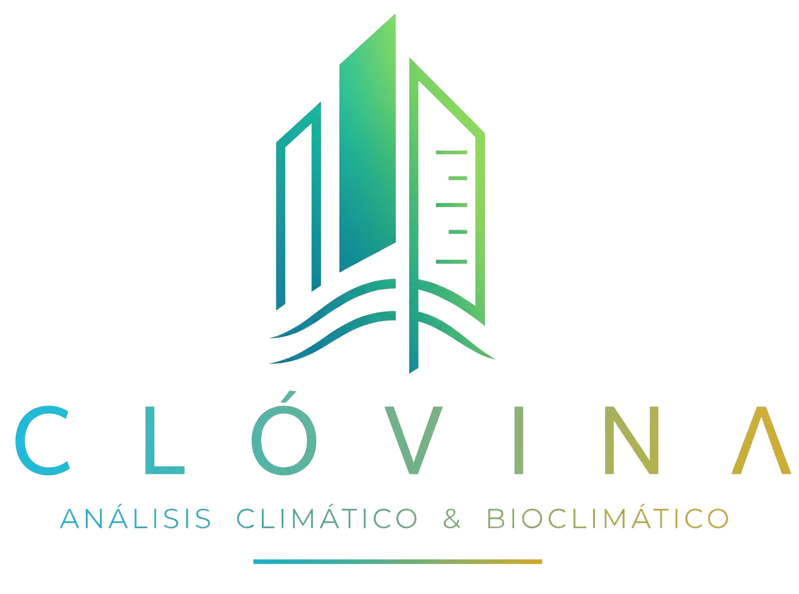

CLÓVINA
Exportar PDF
01 / Climograma de Givoni
02 / Cuadro de Datos
Muestra
TBS Máx
TBS Mín
HR %
Zonas
03 / Resumen General
Procesando...
04 / Estrategias Arquitectónicas
05 / Imagen Arquitectónica Referencial

Ubicación: Guayaquil
01 / Climograma de Givoni
03 / Resumen General Arquitectónico